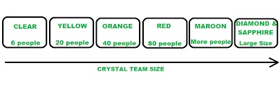

Metodologia Crystal
História das Metodologias Crystal:
As metodologias Crystal foram desenvolvidas por Alistair Cockburn, um cientista de computadores americano
e um dos signatários do Manifesto Agile.
Cockburn acreditava no poder das pessoas e na interação entre os membros da equipe como elementos
fundamentais para o sucesso do desenvolvimento de software.
Ele projetou o Crystal como uma família de metodologias ágeis que se adaptam às necessidades das equipes e
dos projetos.
Princípios do Crystal:
Os princípios fundamentais do Crystal incluem foco em pessoas, interações, comunidade, skills, talento e
comunicação.A metodologia enfatiza a flexibilidade, a adaptação e a leveza, evitando muita documentação e
relatórios.
Os princípios também destacam a importância da melhoria contínua, entrega frequente e comunicação direta
entre
os membros da equipe.
Famílias Crystal:
Existem diferentes famílias de metodologias Crystal, como Crystal Clear (para equipes pequenas), Crystal
Yellow (para equipes de médio porte), Crystal Orange (para projetos maiores) e Crystal Red (para equipes de
grande escala).
Cada família se adapta a diferentes tamanhos e complexidades de projetos, com variações nas práticas e
abordagens utilizadas.
Segundo o seu fundador, Alistair Cockburn – um cientista de computadores americano, e um dos assinantes do
Manifesto Agile – a “Crystal é uma família de metodologias de desenvolvimento de software que funciona com o
poder investido pelas pessoas, é extremamente leve e “strech-tofit””. Basicamente, Cockburn acreditava que o
talento e a forma como os membros da equipa interagem entre si traz múltiplos benefícios para todo o
projeto.
Como funciona o Crystal?
Até agora, ficamos sabendo que o cristal é uma família de várias abordagens de desenvolvimento, e não um
grupo de ferramentas e métodos de desenvolvimento prescritos. No início, a abordagem é definida considerando
os requisitos do negócio e as necessidades do projeto. Várias metodologias na família Cristal, também
conhecidas como pesos da abordagem Cristal, são representadas por diferentes cores do espectro.
A família de cristais consiste em muitas variantes, como Cristalino, Amarelo Cristal, Vermelho Cristal,
Safira Cristal, Vermelho Cristal, Teia Laranja Cristal, Diamante Cristal.
- Crystal Clear-
A equipe consiste de apenas 1 a 6 membros, o que é adequado para projetos de curto prazo em que os membros
trabalham em um único espaço de trabalho.
- Crystal Yellow-
Tem uma equipe pequena de 7 a 20 membros, onde o feedback é obtido de usuários reais. Esta variante envolve
testes automatizados que resolvem bugs mais rapidamente e reduzem o uso de muita documentação.
- Crystal Orange-
Possui equipe de 21 a 40 integrantes, sendo dividida de acordo com suas habilidades funcionais. Aqui, o
projeto geralmente dura de 1 a 2 anos e a liberação é necessária a cada 3 a 4 meses.
- Crystal Orange Web-
Tem também o tamanho de equipe de 21-40 membros onde os projetos que têm uma base de código em constante
evolução que está sendo usada pelo público. Também é semelhante ao Crystal Orange, mas aqui eles não tratam
de um único projeto, mas de uma série de iniciativas que requerem programação.
- Crystal Red-
O desenvolvimento do software é liderado por 40-80 membros onde as equipes podem ser formadas e divididas de
acordo com as necessidades.
- Crystal Maroon-
Envolve projetos de grande porte onde o tamanho da equipe é de 80-200 membros, onde os métodos são
diferentes e de acordo com os requisitos do software.
- Crystal Diamond & Sapphire-
Esta variante é usada em grandes projetos onde há um risco potencial para a vida humana.

Processo Crystal:
- O processo Crystal varia de acordo com a família escolhida, mas em todas elas, a comunicação direta e a
interação entre os membros da equipe são essenciais.
- Atividades comuns incluem workshops de retrospectiva, revisões técnicas e entregas frequentes de
incrementos de software.
- A documentação é mantida no mínimo, priorizando a colaboração.
Benefícios e Desafios:
- Benefícios do Crystal incluem entregas frequentes, melhoria contínua, comunicação próxima, adaptação à
cultura da equipe e habilidade de responder às mudanças.
- Desafios incluem variações nas práticas dependendo da família escolhida, possível dificuldade para equipes
distribuídas, falta de planos pré-definidos e documentação limitada.
- Garante entregas frequentes, de forma a poder identificar eventuais problemas em todas as fases.
- Existe sempre espaço para a melhoria de caraterísticas, tirando algum tempo ao desenvolvimento de software
e
permitindo a discussão sobre como aprimorar processos.
- Permite uma comunicação próxima e promove a interação e partilha de conhecimentos entre os membros das
equipas.
Em resumo, as metodologias Crystal são uma abordagem ágil flexível que coloca as pessoas e suas interações
no centro do desenvolvimento de software. Elas se adaptam a diferentes contextos de projeto e têm
benefícios, como a entrega frequente e a melhoria contínua, mas também desafios, como a falta de
documentação e variações nas práticas.
fontes: https://acervolima.com/
https://www.portal-gestao.com/